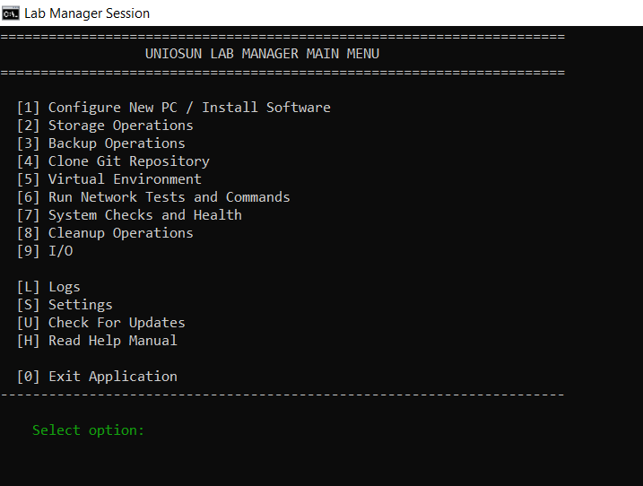
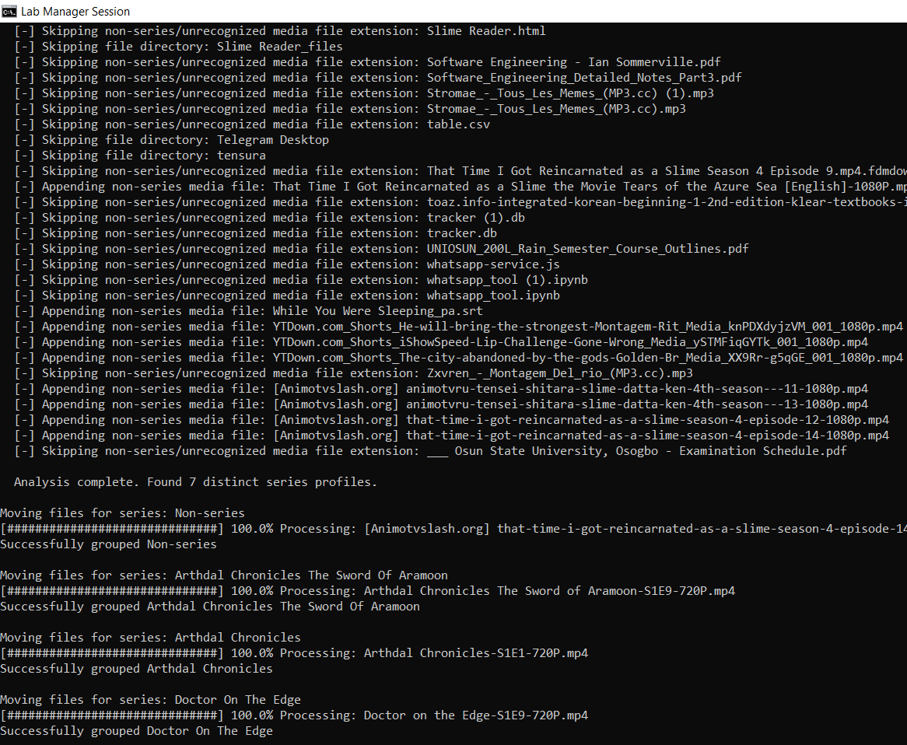
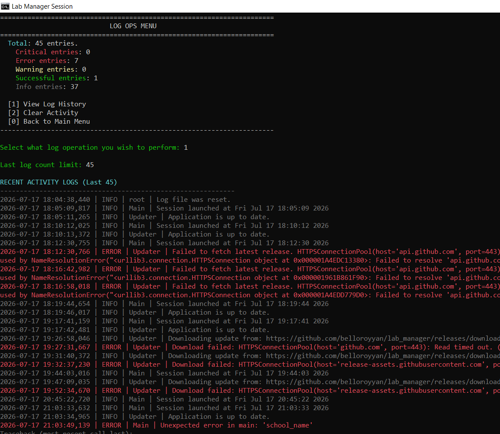

FOCIT Lab Manager Central Report System
Automated, multi-tiered architecture designed specifically for managing local infrastructure pipelines, diagnosing network workspaces, setting up runtime parameters, and distributing localized environments across Windows deployment target profiles.
Lead Developer Profile
Core Architecture Designed and Engineered by Bello Royyan.
Core System Maintainer | GitHub Workspace
Quick Start — Admin Console
The admin console (main.py) is what you run on your own workstation to operate the dashboard and orchestrate actions across the lab. It's Windows-first and depends on a handful of packages.
-
Install Python 3.11+ and dependencies.
pip install colorama psutil requests pyzipper fpdf winshell pyyaml cryptography -
Run the console.
python main.py— first run auto-generatessettings.jsonand createslogs/,reports/, andvenvs/next to the project. - Pick a menu option. Numbers/letters route to the relevant sub-menu — Network, Backup, Venv, Cleanup, I/O, Logs, and Settings all prompt for whatever input they need (paths, IPs, package names).
- Deploy agents to lab PCs. See Listener / Agent Installation below for turning a lab PC into a manageable endpoint.
Project Directory Tree
The structured hierarchy below illustrates where each file is located within the platform ecosystem based on dependency mapping:
Project in Action
Visual workspace previews demonstrating live execution states, system diagnostics, and reporting interfaces.



Global Configuration Properties
The centralized configuration module (config.py) isolates system parameters cleanly:
System Constants Mapping
Default target system paths run automatically beneath active system targets user paths profiles:
- Workspace Base Path:
~/Desktop/Lab Manager/ - Archived Workspace Nodes:
~/Desktop/lab_manager_backups/ - Local DB Instance:
lab_manager.db(SQLite Engine)
The Core Layer Subsystems
network.py
Manages LAN sweeping threads, registers local network hosts, and processes raw subnet requests securely.
venv.py
Constructs isolated Python development runtimes across lab systems and patches missing dependencies.
backup.py
Class-driven backup manager engine providing password-protected AES zip compression architectures.
cleanup.py
Triggers routine storage purges, maps deep allocation spaces, and flushes Recycle Bin contexts.
Utility Services
database.py
Automates native SQLite workflows to store node information maps and unique tracking host signatures.
report.py
Uses FPDF graphics objects layers to render execution records directly into printable system documents.
update.py
Pings remote GitHub endpoints to handle real-time code updates and pull compiled build binaries.
identity.py
Holds the per-machine Fernet key inside a hidden identity file and encrypts/decrypts every admin-to-agent message.
Security Model
Every message between the admin console and a lab agent is encrypted — nothing about remote control relies on network obscurity alone.
Per-Machine Encryption Key
A Fernet key lives inside a hidden identity file on each machine, generated once and exported as secret.key for manual transfer (USB, not email) to agents. It is never stored in settings.json.
Password-Gated Setup
First-run listener setup requires creating a password before an identity file exists. It's stored only as a salted PBKDF2-HMAC-SHA256 hash — never in plaintext.
Time-Boxed Remote Commands
SHUTDOWN, RESTART, and LOGOUT are rejected unless ENABLE_REMOTE was sent first. The window auto-expires after up to 60 minutes.
secret.key like a credential and keep ENABLE_REMOTE windows short.
Listener / Agent Installation
Copy the agent build below onto every lab PC that should show up in the admin console. Each agent runs a one-time password-protected setup, then listens quietly on UDP for encrypted requests.
Setup Steps
-
Copy
listener.exeto the target PC. Any folder works — the agent creates its own identity file under%PROGRAMDATA%/LabManagerthe first time it runs. - Run it once and complete first-run setup. You'll be asked to set a local password (protects re-running setup later), and optionally a school/lab name and log file path.
-
Import the shared
secret.key. When prompted, point to thesecret.keyfile generated from the admin console's identity (viagenerate_and_export_key()) — transfer it by USB, not over email or chat. -
Allow the firewall rule.
Run as Administrator once so the agent can add its own inbound UDP rule (default port
8088); otherwise allow it manually when prompted. - Leave it running. After first-run setup, the console window hides itself and the agent listens silently until the PC restarts or the process is killed.
Command Reference
| Command | Access | Effect |
|---|---|---|
INFO | Always | Returns full hardware/OS telemetry, encrypted. |
PING | Always | Replies with an encrypted PONG — basic liveness check. |
ENABLE_REMOTE <minutes> | Always | Opens a 1–60 minute window for the gated commands below. |
DISABLE_REMOTE | Always | Closes the remote-command window immediately. |
SHUTDOWN | Gated | Schedules a shutdown — requires an active ENABLE_REMOTE window. |
RESTART | Gated | Restarts the machine — requires an active window. |
LOGOUT | Gated | Logs the current user out — requires an active window. |
KILL | Always | Kills whatever is bound to the listener's own port. |
Software Deployment Hub
Download standalone executables directly from the deployment history matrix:
Date: 22-07-2026
Date: 21-07-2026
Date: 19-07-2026
Date: 18-07-2026
Date: 18-07-2026
Date: 18-07-2026
Changelog
Notable fixes and additions across recent versions.
v2.1.3 Task Scheduler and Admin Check
- Task scheduling to keep agent on always
- Added admin privilege check logic to use cases
v2.1.2 Encrypted Agent Messaging
- Identity-file-backed Fernet encryption for all admin ↔ agent UDP traffic
- Password-protected first-run setup for the listener agent
- Time-boxed
ENABLE_REMOTE/DISABLE_REMOTEgating for shutdown/restart/logout
v2.1.1 Stability & Correctness Fixes
- Fixed Python 2 exception syntax in
main.py - Fixed menu option [7] routing in
menu.py - Fixed SQL PRIMARY KEY syntax and improved DB connection handling
- Fixed ping timeout logic in
network.py - Fixed PDF output location to use
REPORT_DIRinreport.py
v2.1.0 Reporting & Cleanup
- Added branded multi-section PDF inventory reports
- Added cleanup tooling (temp purge, recycle bin, large-file review)
v2.0.0 Core Rewrite
- Introduced SQLite-backed device registry
- Modularized
core/,ui/, andutils/layers